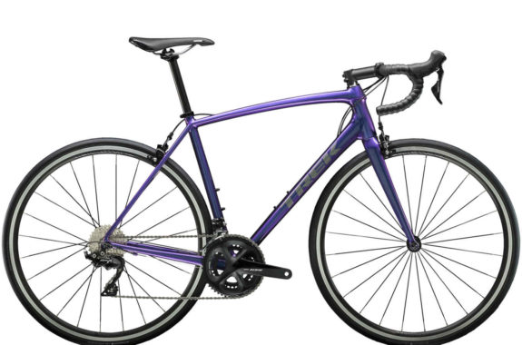

改めて私について
改めて急に誰だよと思うかもしれないので、一応説明します。
まず、私がなぜホームページを作ろうと考えたかというと、
html
や
css
などについて深く知りたいと思ったからです。
僕の好きなものやハマっているものについて
| 1.anime | リゼロ、異世界おじさん、転スラ・・・ |
| 2.自転車(ロードバイク) | trek,derosa,bianchi(ほしいー) |
| 3.programming | C,C++,html,css,python |
1.anime
まず、単純に言うと私は異世界もののアニメが好きです。
リゼロはもとは見たことがなかったのですが、
ペテルギウス・ロマネコンティ
だけは知っていました。(笑)
いやーペテルギウス面白いですよねー
怠惰ですねーとかめちゃくちゃ頭に残って離れませんわ↓
2.ロードバイク
これは最近はまりました。もともと通学のときに電動自転車を使っているのですが、
どうも物足りない気がして、今現在自転車を買おうとお金をためている最中です。
何で物足りなさを感じたのかというと、単純に電動自転車だとスピードを出せないですし、
何よりも距離が長くなればなるほど電動自転車では補わなければいけない問題が発生してしまう
ので、ここは思い切ってロードバイクを買うべきだと感じました。今のところ、trekの↓がいいと思っています。

3.Programming
プログラミングは高専に行ってから学び始めたのですが、端的に言ってしまうと僕は初心者です。
最初はｃ言語から始めたんですけど、ある程度学んで簡単なオセロゲームを作ろうとして挫折してしまいました。
ｃ言語はよくポインターが山場と言われていますが、僕はポインターをどう応用できるようになるかが
山場だと思っています。ちなみに、オセロゲームの作成のどの段階で挫折してしまったのかというと、
一人でもできるオセロゲームを作っていたので、対戦相手のAIを作る段階で自分の知識不足を
痛感してしましました。
話は変わって僕が他に経験したことのあるプログラミング言語は上の表のとおりです。
今こうして書いたhtml文章も初心者ながら頑張ってcodeを組んだものなので、
温かいも目で見てもらうとありがたいです。